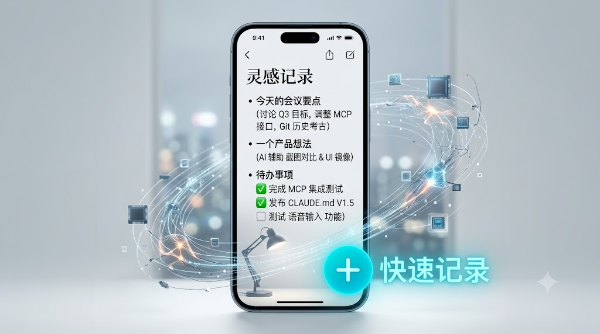
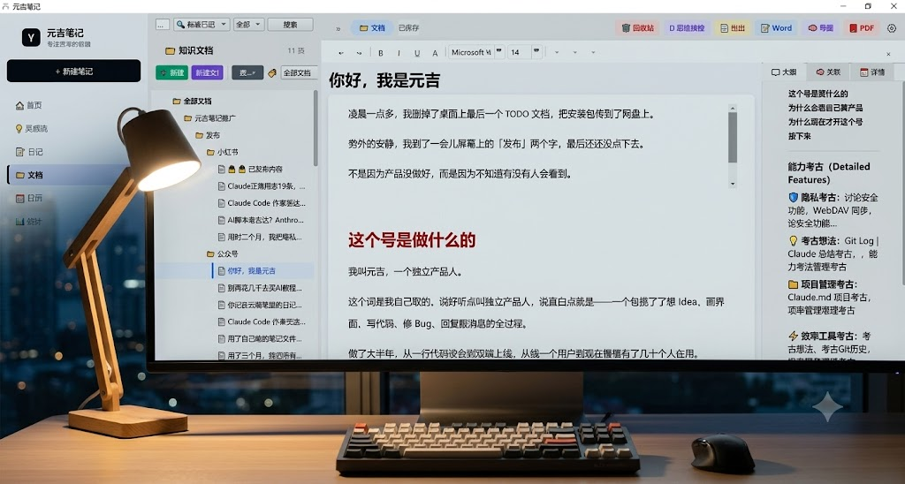

捕捉每一个想法，不打断你的思考节奏
打开元吉笔记就能开始记录，不需要等待加载、不需要联网。手机端专为快速捕捉设计，从打开到记录只需一次点击。


让你的想法真正沉淀，而不是散落在各处
桌面端提供完整的三栏工作区：左侧导航文件夹和标签、中间笔记列表、右侧富文本编辑器。灵感在手机上随手记录，在桌面端集中整理。
本地优先 + 加密存储 + 自主同步
所有笔记默认存储在本地 SQLite 数据库中。密码经过 PBKDF2 200K 次迭代加密，桌面端使用 Fernet 格式（AES-128-CBC + HMAC-SHA256），手机端使用 AES-256-CBC。两套加密格式自动兼容。
笔记存在别人服务器上，服务停了数据可能拿不回来
同步逻辑不透明，你到底有几个副本、存在哪里，没人说得清
打开一个笔记软件要等加载、过启动页、看广告——太久了
这台电脑改了，那台手机上没变，冲突了也不知道哪个版本是对的
你的日记、财务记录、个人思考——存在别人服务器上，除了相信他们不会看，没有别的办法
工具本该让记录更简单，但现在变得越来越复杂。
笔记存在哪里、谁能访问、会不会被审查——这些决定权不在你手上
如果服务商停止运营、变更收费策略，你的数据可能无法完整导出
你的笔记系统今天能用，不代表明年还能用——依赖外部服务永远有这个风险
所有数据默认存储在你的设备上，不上传任何中心服务器。离线也能用，断网不影响记笔记。
手机端捕捉灵感，桌面端深度整理。两套界面、一套数据，同一个知识库。
支持自选云盘（坚果云 / Nextcloud）+ 全程加密。数据走你自己的云盘，不经过第三方服务器。
| 维度 | 传统方式 | 元吉笔记 |
|---|---|---|
| 数据控制 | 外部平台 | ✔ 完全自控 |
| 同步方式 | 自动但不可控 | ✔ 用户决定 |
| 隐私 | 依赖平台 | ✔ 本地加密 |
| 价格 | 持续订阅 | ✔ 一次买断 |
| 使用复杂度 | 中等 | ✔ 更简单 |
你不需要更复杂的工具，你需要更可控的系统。
你的数据应该由你决定存在哪里，而不是由工具决定。
你需要的是快速记录和随时查阅，不是学习一个越来越庞大的系统。笔记工具不应该成为新的负担。
几年积累的笔记是你最重要的数字资产之一。你确定要把它放在一个你无法完全控制的系统里吗？
手机、平板、电脑——你希望在任意设备上随时访问笔记，而不是被同步问题困扰。
构建个人知识库与长期记录系统，数据自主可控不依赖平台
整理学习内容与成长记录，标签 + 双向链接自动构建知识网络
记录灵感、写作与复盘，AI 思维棱镜帮你把问题想透彻
即使产品停止更新，你的数据仍然完全可用。
不是便宜，是没有风险
桌面端 + 手机端，全部功能无限制
试用和购买请联系
微信：fdst68
QQ:1411840771
公众号：元吉实验室
支持 Windows + Android · 本地存储 · 数据可完全导出